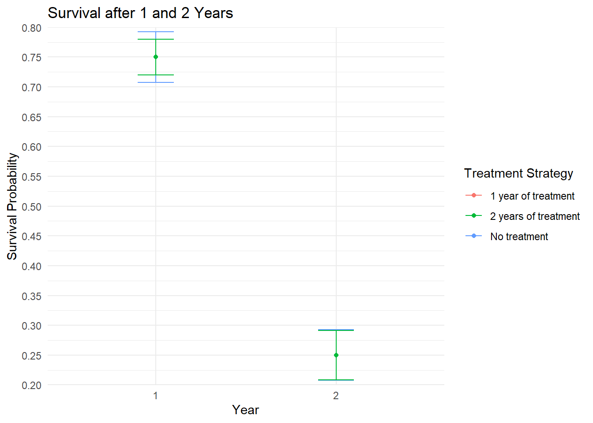
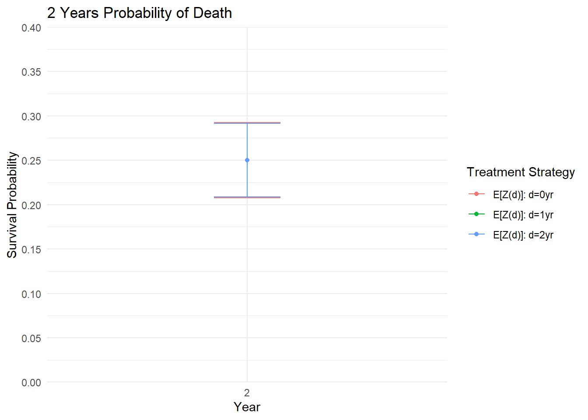

set.seed(8)
# Pacman used to install and load all packages
if (!require("pacman")) install.packages("pacman")
# Load packages
pacman::p_load(
"lmtp",
"data.table",
"ggplot2",
"knitr",
"polle")Targeted Learning as an Alternative to Cloning Censoring Weighting
causal inference
study design
targeted learning
Tutorial demonstrating how targeted learning can be used to prevent immortal time bias similarly to what is achieved with cloning-censoring weighting.
In this tutorial I demonstrate how targeted learning can (conveniently) be used as an alternative to cloning-censoring weighting. Targeted learning further gives the benefits of double robustness and the possibility to use data-adaptive methods (machine learning), thus minimizing the potential for model mis-specification bias (Schuler and Rose (2017)). These properties are not intrinsically given using cloning-censoring weighting.
Further, the data wrangling required before analysis is much simpler using the proposed targeted learning approach as compared with cloning-censoring weighting.
Here, targeted learning is utilized through the lmtp package(Díaz et al. (2023)), and the polle package (Nordland and Holst (2022)).
An advantage of the polle-package as compared to packages for targeted learning (lmtp/tmle) is that it is also developed to answer questions of subgroup effects and to identify optimal treatment policies.
Data Example from Paper by Miguel Hernan
In the paper: “How to estimate the effect of treatment duration on survival outcomes using observational data”, Hernán (2018) demonstrates how cloning-censoring weighting can be used to estimate the true effect of treatment duration on survival outcomes. In his example, 1 or 2 years of Aspirin treatment has no effect on all-cause mortality.
Hernan demonstrates that a naive analysis would show an effect even though there is non due to immortal time bias, while cloning-censoring weighting will avoid this bias. In the example there is no confounding or censoring.
Here I use the exact same dataset for demonstrative purposes to show that a targeted learning approach also estimates the true effect of treatment (no effect).
You can compare the dataset below with the dataset in the paper to convince yourself that they are the same.
dt1 <- data.table(
Person = seq(1, 12, 1),
durA = c(rep(0, 4), rep(1, 4), rep(2, 4)),
Aspirin1 = c(rep("No", 4), rep("Yes", 8)),
Dead1 = c(rep("No", 3), "Yes", rep("No", 3), "Yes", rep("No", 3), "Yes"),
Aspirin2 = c(rep("No", 3), "-", rep("No", 3), "-", rep("Yes", 3), "-"),
Dead2 = c("No", rep("Yes", 3), "No", rep("Yes", 3), "No", rep("Yes", 3))
)
kable(dt1)| Person | durA | Aspirin1 | Dead1 | Aspirin2 | Dead2 |
|---|---|---|---|---|---|
| 1 | 0 | No | No | No | No |
| 2 | 0 | No | No | No | Yes |
| 3 | 0 | No | No | No | Yes |
| 4 | 0 | No | Yes | - | Yes |
| 5 | 1 | Yes | No | No | No |
| 6 | 1 | Yes | No | No | Yes |
| 7 | 1 | Yes | No | No | Yes |
| 8 | 1 | Yes | Yes | - | Yes |
| 9 | 2 | Yes | No | Yes | No |
| 10 | 2 | Yes | No | Yes | Yes |
| 11 | 2 | Yes | No | Yes | Yes |
| 12 | 2 | Yes | Yes | - | Yes |
Naive and (Immortal Time) Biased Analysis
Probability of death for patients actually taking aspirin for 2 years
9, 10, and 11 survived to the second year and are on aspirin at start of second year.
dt1[Aspirin2 == "Yes"] Person durA Aspirin1 Dead1 Aspirin2 Dead2
<num> <num> <char> <char> <char> <char>
1: 9 2 Yes No Yes No
2: 10 2 Yes No Yes Yes
3: 11 2 Yes No Yes Yesdeaths_aspirin2 <- 2/3
round(deaths_aspirin2, 2)[1] 0.67Probability of death for patients not taking aspirin
The patients who did not receive aspirin in the data are 1, 2, 3, and 4.
dt1[Aspirin1 == "No" & Aspirin2 %in% c("No","-")] Person durA Aspirin1 Dead1 Aspirin2 Dead2
<num> <num> <char> <char> <char> <char>
1: 1 0 No No No No
2: 2 0 No No No Yes
3: 3 0 No No No Yes
4: 4 0 No Yes - Yesdeaths_no_aspirin <- 3/4
round(deaths_no_aspirin,2)[1] 0.75Naive treatment effect of 2 years Aspirin vs no aspirin
round(deaths_aspirin2 / deaths_no_aspirin, 2)[1] 0.89The relative risk difference is less than 1 even though there is no effect.
From the paper: “This is not surprising: the average survival is longer in people who received two years of treatment because they were alive for at least two years. By definition, people receiving treatment were “immortal” during those two years, which is why the bias of this naive analysis is referred to as immortal time bias.”
Format Dataset for Analysis using Targeted Learning
I replace “Yes” and “No” with 1 and 0, respectively.
Further, I code missing values as NA instead of “-”.
One can chose to adjust for censoring and confounding as well using targeted learning, however in this example for simplicity there is non.
dt1 <- data.table(
Person = seq(1, 12, 1),
durA = c(rep(0, 4), rep(1, 4), rep(2, 4)),
Aspirin1 = c(rep(0, 4), rep(1, 8)),
Dead1 = c(rep(0, 3), 1, rep(0, 3), 1, rep(0, 3), 1),
Aspirin2 = c(rep(0, 3), NA, rep(0, 3), NA, rep(1, 3), NA),
Dead2 = c(0, rep(1, 3), 0, rep(1, 3), 0, rep(1, 3))
)
# If censoring indicators are needed (here they are not)
#dt1[, Censoring1 := 1]
#dt1[, Censoring2 := ifelse(Dead1 == 1, NA, 1)]
# Order
#dt1 <- dt1[,
# .(Person, durA, Aspirin1, Censoring1, Dead1, Aspirin2, Censoring2, Dead2)]
# Show data.table
kable(dt1)| Person | durA | Aspirin1 | Dead1 | Aspirin2 | Dead2 |
|---|---|---|---|---|---|
| 1 | 0 | 0 | 0 | 0 | 0 |
| 2 | 0 | 0 | 0 | 0 | 1 |
| 3 | 0 | 0 | 0 | 0 | 1 |
| 4 | 0 | 0 | 1 | NA | 1 |
| 5 | 1 | 1 | 0 | 0 | 0 |
| 6 | 1 | 1 | 0 | 0 | 1 |
| 7 | 1 | 1 | 0 | 0 | 1 |
| 8 | 1 | 1 | 1 | NA | 1 |
| 9 | 2 | 1 | 0 | 1 | 0 |
| 10 | 2 | 1 | 0 | 1 | 1 |
| 11 | 2 | 1 | 0 | 1 | 1 |
| 12 | 2 | 1 | 1 | NA | 1 |
Replicate the Dataset 100 times for Power
# Replicate the data set 100 times
dt <- replicate(100, dt1, simplify = FALSE)
# Stack all replicates on top of each other
dt <- rbindlist(dt)
# Assign new person ID
dt[, id := seq(1, dim(dt)[1], 1)]
# Set random baseline confounder with no confounding
# This is required for the lmtp software to run
#dt[, W1 := rbinom(n = nrow(dt), size = 1, prob = 0.5)]
dt[, W1 := 0]
# data.frame is required by lmtp package
dt <- as.data.frame((dt))Dynamic Treatment Regimes and Targeted Learning
Define Treatment Strategies
We estimate the effect of 2-year survival comparing 3 treatment strategies:
- No aspirin treatment
- 1-year of treatment with aspirin
- 2-years of treatment with aspirin
To obtain this comparison analytically we define the treatment indicators as follows:
Treatment strategy 1 can be defined as a constant 0.
Treatment strategy 2 can be defined as 1 in the first year, and 0 in year 2.
Treatment strategy 3 as a constant 1.
# Never treat
d0 <- function(data, trt) {
rep(0, nrow(data))
}
# Treat 1-year and then stop treatment
d_1yr <- function(data, trt) {
if (trt == "Aspirin1") return(rep(1, nrow(data)))
if (trt == "Aspirin2") return(rep(0, nrow(data)))
}
# Treat for 2-years (always treat)
d_2yrs <- function(data, trt) {
rep(1, nrow(data))
}Define Outcome and Treatment Variables
A <- c("Aspirin1", "Aspirin2")
Y <- c("Dead1", "Dead2")
C <- c("Censoring1", "Censoring2") # No censoring in this example
W <- c("W1")Comparative Effectiveness between Treatment Strategies
Estimate Survival
No treatment, 1 year of treatment, and 2 years of treatment.
no_treat <- lmtp_survival(
data = dt,
trt = A,
outcome = Y,
baseline = W,
#cens = C,
shift = d0, # No treatment
folds = 1,
estimator = "lmtp_sdr",
learners_trt = "SL.glm",
learners_outcome = "SL.glm",
k = Inf
)
treat_1yr <- lmtp_survival(
data = dt,
trt = A,
outcome = Y,
baseline = W,
#cens = C,
shift = d_1yr, # 1 year of treatment
folds = 1,
estimator = "lmtp_sdr",
learners_trt = "SL.glm",
learners_outcome = "SL.glm",
k = Inf
)
treat_2yr <- lmtp_survival(
data = dt,
trt = A,
outcome = Y,
baseline = W,
#cens = C,
shift = d_2yrs, # 2 years of treatment
folds = 1,
estimator = "lmtp_sdr",
learners_trt = "SL.glm",
learners_outcome = "SL.glm",
k = Inf
)Plot Survival
# Get results in tidy format
treat_2yr <- tidy(treat_2yr)
treat_1yr <- tidy(treat_1yr)
no_treat <- tidy(no_treat)
# Label treatment regimes
treat_2yr$trt <- "2 years of treatment"
treat_1yr$trt <- "1 year of treatment"
no_treat$trt <- "No treatment"
# Stack
results <- rbind(no_treat, treat_1yr, treat_2yr)
# Plot
ggplot(results, aes(x = as.factor(time), y = estimate, color = trt)) +
geom_point() +
geom_errorbar(aes(ymin = conf.low, ymax = conf.high), width = 0.2) +
labs(x = "Year", y = "Survival Probability") +
scale_y_continuous(limits = c(0.20, 0.8),
n.breaks = 10,
expand = c(0, 0)) +
theme_minimal() +
labs(color = "Treatment Strategy",
title = "Survival after 1 and 2 Years")
Estimate Average Treatment Effect (ATE)
no_treat <- lmtp_sdr(
data = dt,
trt = A,
outcome = Y,
baseline = W,
shift = d0,
folds = 1,
outcome_type = "survival",
learners_trt = "SL.glm",
learners_outcome = "SL.glm",
k = Inf
)
treat_1yr <- lmtp_sdr(
data = dt,
trt = A,
outcome = Y,
baseline = W,
shift = d_1yr,
folds = 1,
outcome_type = "survival",
learners_trt = "SL.glm",
learners_outcome = "SL.glm",
k = Inf
)
treat_2yr <- lmtp_sdr(
data = dt,
trt = A,
outcome = Y,
baseline = W,
shift = d_2yrs,
folds = 1,
mtp = TRUE,
outcome_type = "survival",
learners_trt = "SL.glm",
learners_outcome = "SL.glm",
k = Inf
)Relative Risk Between Treatment Regimes
Using targeted learning we correctly estimate no evidence of an effect of treatment on survival.
No treatment vs 1 year of treatment
res <- lmtp_contrast(treat_1yr, ref = no_treat, type = "rr")$estimates
kable(res, digits=3)| shift | ref | estimate | std.error | conf.low | conf.high | p.value |
|---|---|---|---|---|---|---|
| 0.25 | 0.25 | 1 | 0.121 | 0.763 | 1.237 | 0 |
No treatment vs 2 years of treatment
res <- lmtp_contrast(treat_2yr, ref = no_treat, type = "rr")$estimates
kable(res, digits=3)| shift | ref | estimate | std.error | conf.low | conf.high | p.value |
|---|---|---|---|---|---|---|
| 0.25 | 0.25 | 1 | 0.121 | 0.763 | 1.237 | 0 |
2 years of treatment vs 1 years of treatment
res <- lmtp_contrast(treat_2yr, ref = treat_1yr, type = "rr")$estimates
kable(res, digits=3)| shift | ref | estimate | std.error | conf.low | conf.high | p.value |
|---|---|---|---|---|---|---|
| 0.25 | 0.25 | 1 | 0.116 | 0.774 | 1.226 | 0 |
Here the estimate is the risk ratio which is estimated to be 1 in all comparisons indicating no difference in effect of treatments.
The polle-package
The same analysis can be made using the polle-package.
To utilize the polle-package for estimating average treatment effects (or subgroup effect or optimal treatment policies), data has to be in long format. Further, we will have to add a row defining what happens after the last time point of follow-up.
Simulate data
dt1 <- data.table(
id = seq(1, 12, 1),
durA = c(rep(0, 4), rep(1, 4), rep(2, 4)),
W1 = rep(0, 12),
Aspirin1 = c(rep(0, 4), rep(1, 8)),
Dead1 = c(rep(0, 3), 1, rep(0, 3), 1, rep(0, 3), 1),
W2 = rep(0, 12),
Aspirin2 = c(rep(0, 3), NA, rep(0, 3), NA, rep(1, 3), NA),
Dead2 = c(0, rep(1, 3), 0, rep(1, 3), 0, rep(1, 3))
)
# Replicate the data set 100 times
dt <- replicate(100, dt1, simplify = FALSE)
# Stack all replicates on top of each other
dt <- rbindlist(dt)
# Assign new person ID
dt[, id := seq(1, dim(dt)[1], 1)]Get into long format
pd <- melt(
data = dt,
id.vars = "id",
measure.vars = list(A = c("Aspirin1", "Aspirin2"),
W = c("W1", "W2")),
variable.name = "time")
# One time per time
pd[ ,time := as.integer(as.character(time))]
pd <- pd[complete.cases(pd),]
pd[, event := 0]
setkey(pd, id, time)
# Select last row by id
util <- pd[, .SD[.N], by = list(id)]
util[ , time := time + 1]
util[ , U := dt$Dead2]
util[, event := 1] # ?
util <- util[, list(id, time, event, U)]
pd <- rbind(pd, util, fill = TRUE)
pd[is.na(U), U := 0]
setkey(pd, id, time)Visualize data format
U: Is the outcome indicator (alive:0 or dead:1)
Event: Is the indicator telling that its end of follow-up
A: Treatment (Asprin yes/no)
W: Baseline covariate required to use the package
kable(head(pd,12))| id | time | A | W | event | U |
|---|---|---|---|---|---|
| 1 | 1 | 0 | 0 | 0 | 0 |
| 1 | 2 | 0 | 0 | 0 | 0 |
| 1 | 3 | NA | NA | 1 | 0 |
| 2 | 1 | 0 | 0 | 0 | 0 |
| 2 | 2 | 0 | 0 | 0 | 0 |
| 2 | 3 | NA | NA | 1 | 1 |
| 3 | 1 | 0 | 0 | 0 | 0 |
| 3 | 2 | 0 | 0 | 0 | 0 |
| 3 | 3 | NA | NA | 1 | 1 |
| 4 | 1 | 0 | 0 | 0 | 0 |
| 4 | 2 | NA | NA | 1 | 1 |
| 5 | 1 | 1 | 0 | 0 | 0 |
Define policy_data object based on survival data in long format
pd <- policy_data(data = pd,
type = "long",
action = "A", # Treatment
utility = "U", # Outcome
id = "id",
stage = "time")Define treatment policies using policy_def
p_0yr <- policy_def(c(0,0), name = "0yr")
p_1yr <- policy_def(c(1,0), name = "1yr")
p_2yr <- policy_def(c(1,1), name = "2yr")Evaluating the policies
Here we estimate the probability of death after 2 years.
time <- 2
# Apply each policy
pe <- lapply(
list(p_0yr, p_1yr, p_2yr),
function(p) {
policy_eval(
policy_data = pd,
policy = p,
g_full_history = TRUE,
q_full_history = TRUE,
# Treatment/assignment model
g_models = replicate(time, g_glm(formula = ~ ., family = quasibinomial())),
# Outcome/q-model
q_models = replicate(time, q_glm(formula = ~ A * ., family = quasibinomial()))
)
}
)
pe <- do.call(what = "merge", pe)
## Influence functions using the lava-package
est <- estimate(pe)Plot Survival Probabilities
# Format results for plotting
results2 <- as.data.table(est$coefmat)
results2$trt <- rownames(est$coefmat)
setnames(results2, old = "2.5%", new = "conf.low")
setnames(results2, old = "97.5%", new = "conf.high")
results2$t <- "2"# Plot
ggplot(as.data.frame(results2), aes(x = as.factor(t), y = 1 - Estimate, color = trt)) +
geom_point() +
geom_errorbar(aes(ymin = 1 - conf.low, ymax = 1 - conf.high), width = 0.2) +
labs(x = "Year", y = "Survival Probability") +
scale_y_continuous(limits = c(0, 0.4),
n.breaks = 10,
expand = c(0, 0)) +
theme_minimal() +
labs(color = "Treatment Strategy",
title = "2 Years Probability of Death")
Relative Risk Between Treatment Regimes
Using targeted learning we correctly estimate no evidence of an effect of treatment on survival.
rr <- function(object, contrast = 1:2, labels = "1 year / 2 year") {
val <- estimate(
object,
f = function(x) log(x[contrast[1]]) - log(x[contrast[2]]),
back.transform = exp, labels = labels, null = 0
)
res <- val$coefmat
res[5] <- val$compare$p.value
return(res)
}No treatment vs 1 year of treatment
res <- rr(
est,
contrast = c(1, 2),
labels = "No Treatment / 1-year of Treatment")
kable(res, digits=3)| Estimate | Std.Err | 2.5% | 97.5% | P-value | |
|---|---|---|---|---|---|
| No Treatment / 1-year of Treatment | 1 | NA | 0.924 | 1.082 | 1 |
No treatment vs 2 years of treatment
res <- rr(
est,
contrast = c(1,3),
labels = "No Treatment / 2-years of Treatment")
kable(res, digits=3)| Estimate | Std.Err | 2.5% | 97.5% | P-value | |
|---|---|---|---|---|---|
| No Treatment / 2-years of Treatment | 1 | NA | 0.924 | 1.082 | 1 |
1 year of treatment vs 2 years of treatment
res <- rr(
est,
contrast = c(2, 3),
labels = "1-year of Treatment / 2-years of Treatment")
kable(res, digits=3)| Estimate | Std.Err | 2.5% | 97.5% | P-value | |
|---|---|---|---|---|---|
| 1-year of Treatment / 2-years of Treatment | 1 | NA | 0.927 | 1.078 | 1 |
References
Díaz, Iván, Nicholas Williams, Katherine L. Hoffman, and Edward J. Schenck and. 2023. “Nonparametric Causal Effects Based on Longitudinal Modified Treatment Policies.” Journal of the American Statistical Association 118 (542): 846–57. https://doi.org/10.1080/01621459.2021.1955691.
Hernán, Miguel A. 2018. “How to Estimate the Effect of Treatment Duration on Survival Outcomes Using Observational Data.” BMJ 360. https://doi.org/10.1136/bmj.k182.
Nordland, Andreas, and Klaus K. Holst. 2022. “Policy Learning with the Polle Package.” arXiv. https://doi.org/10.48550/arXiv.2212.02335.
Schuler, Megan S., and Sherri Rose. 2017. “Targeted Maximum Likelihood Estimation for Causal Inference in Observational Studies.” American Journal of Epidemiology 185 (1): 65–73. https://doi.org/10.1093/aje/kww165.